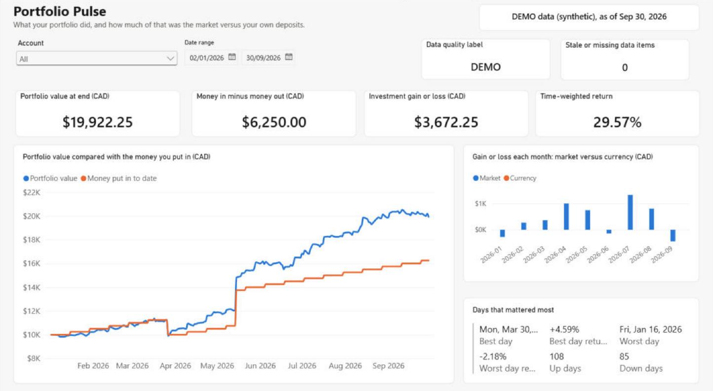
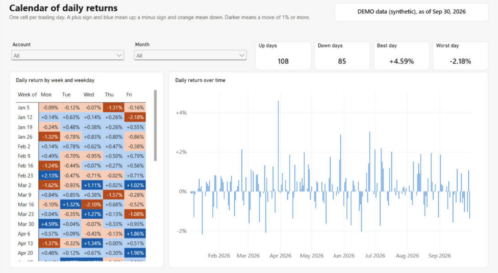
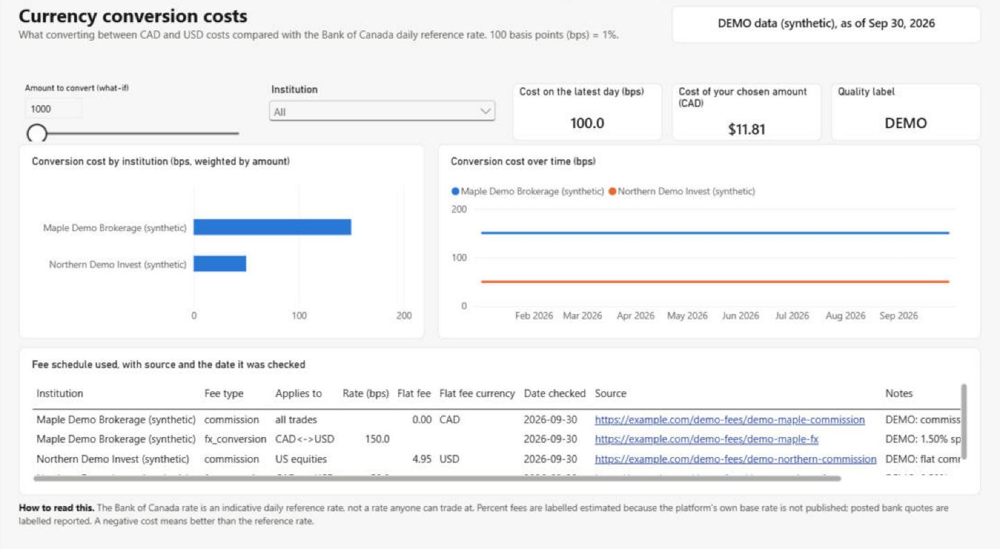
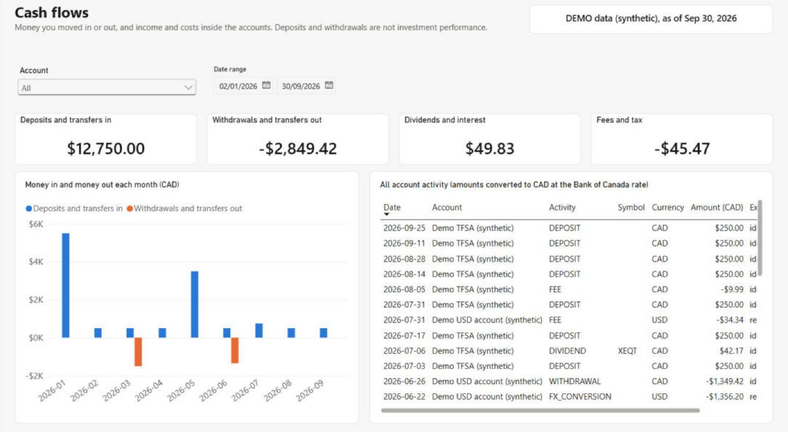
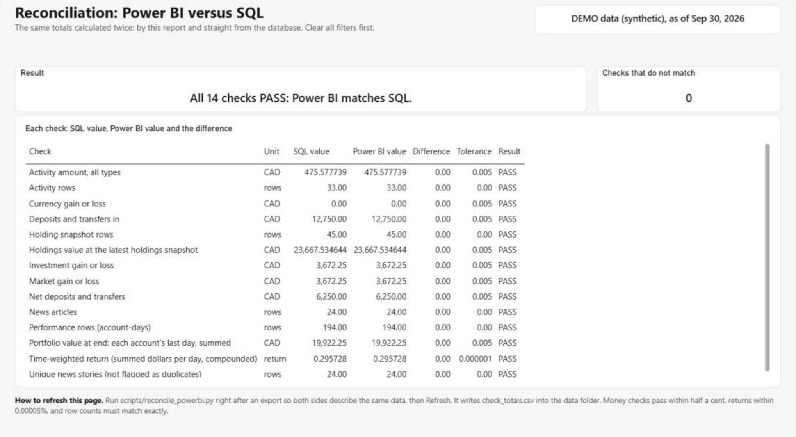

- 400automated tests
- 14 of 14Power BI totals reconciled to SQL
- 62DAX measures, none averaging percentages
- 8 stepsin the daily job, each isolated from the others
The report





How the numbers are calculated
Performance apart from deposits
Daily return = gain ÷ (value at start + that day's flow). Time-weighted return compounds the daily returns, which removes the effect of when money was added.
Summed dollars, never averaged percentages
For several accounts, the report divides summed dollars by summed dollars. Averaging percentages would give a small account the same weight as a large one.
Market versus currency
Everything is converted to CAD at the Bank of Canada daily reference rate, and each day's gain is split into the part from prices and the part from the exchange rate.
Timing, not causes
News is shown as "published around this date": that trading day or the weekday before. The report never claims a headline moved a price.
How it is built
A daily job that degrades gracefully
Eight steps run in isolation. One failing step is logged and rolled back, the rest still run, and the exit code tells the scheduler whether the run was clean, partial or failed.
A data contract with tests
The export Power BI reads is versioned. Adding a column is a minor bump; a rename is a major one. Tests fail if the files drift from the written contract.
Privacy by construction
The public report is built from a separate database that only ever holds synthetic data. An automated gate blocks publishing if any real account, link or secret-like column appears.
Read-only access
Brokerage data arrives through SnapTrade's own connection flow with read-only scope. The project stores no brokerage passwords and has no code path that can place a trade.
Labels on every figure
Each number is marked DEMO, reported, estimated, STALE or MISSING, and the worst label wins. Missing values are left blank, never shown as zero.
A report you can diff
The Power BI model and pages are stored as text (TMDL and PBIR), so every measure and visual change shows up in version control.
Run it yourself
Python 3.12 and Power BI Desktop. The demo needs no accounts or API keys.
Then open powerbi/PortfolioPulse.pbip and click Refresh. Full steps are in the README.